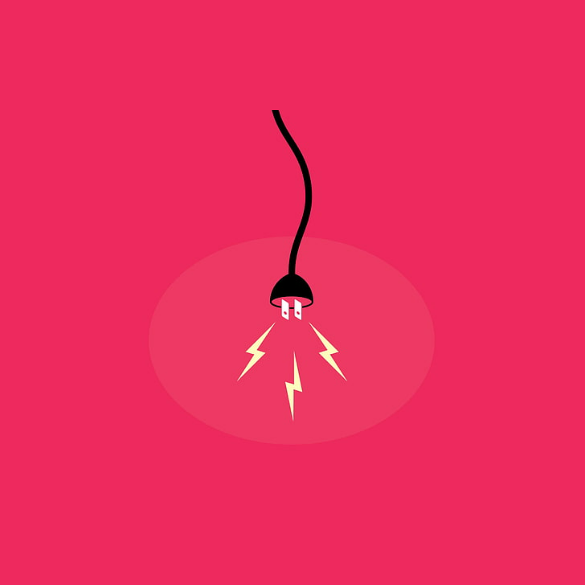

Elektryczność
Elektryczność - jeden z najważniejszych wynalazków w historii ludzkości. Pozwoliła ona na rozwój wielu dziedzin życia i zrewolucjonizowała naszą cywilizację.
Wprowadzenie elektryczności do codziennego użytku umożliwiło oświetlenie domów i ulic, napędzanie maszyn przemysłowych, rozpowszechnienie telefonii, telegrafii oraz innych środków komunikacji na odległość. Dzięki elektryczności możemy korzystać z wielu urządzeń, takich jak telewizory, lodówki, komputery, a także cieszyć się wygodą i bezpieczeństwem w domu dzięki oświetleniu i instalacji elektrycznych.
